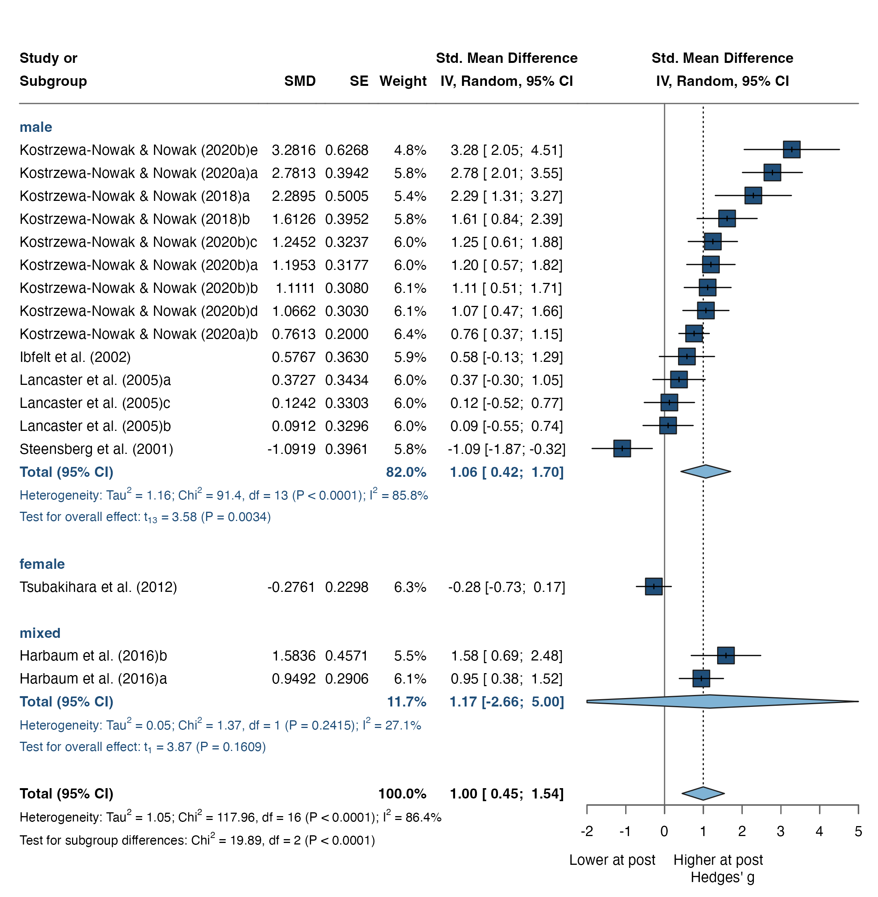
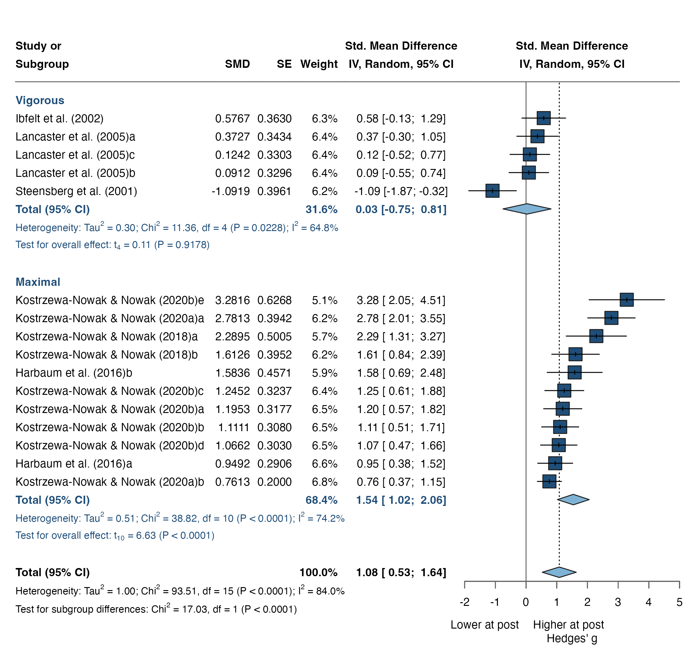

Code
fullData <- load_es("book/data/effect_size/Th1/pre_post/Th1_pre_post_r_050.csv")The base analysis uses the pre-computed Hedges’ g file for Th1 at r = 0.5 (effect_size/Th1/pre_post/Th1_pre_post_r_050.csv). Sensitivity analyses can substitute the r = 0.3 / 0.4 / 0.6 / 0.7 files in the same folder. The pipeline column names are mapped to the analysis conventions (VE_g, Sex, Age, BMI) by load_es().
fullData <- load_es("book/data/effect_size/Th1/pre_post/Th1_pre_post_r_050.csv")metagen() fits a random-effects model on the pre-computed effect sizes (g, SE_g) using the Hedges-Olkin (HE) τ² estimator and the Knapp-Hartung small-sample correction (hakn = TRUE). After inspecting the full set, Kostrzewa-Nowak et al. (2019) was detected as very different across meta-analysis and while not influential on the overall effect, its values were unrealistic and brought substantial misleading variance.
# Meta-analysis on all arms
m1 <- meta::metagen(TE = g, seTE = SE_g, data = fullData, studlab = paste(Study),
random = TRUE, method.tau = "HE", fixed = FALSE,
hakn = TRUE, prediction = TRUE, sm = "SMD")
print(m1, overall = TRUE)Number of studies: k = 18
SMD 95% CI t p-value
Random effects model (HK) 0.8982 [ 0.3316; 1.4649] 3.34 0.0038
Prediction interval [-1.5159; 3.3124]
Quantifying heterogeneity (with 95% CIs):
tau^2 = 1.2328 [0.5533; 2.8692]; tau = 1.1103 [0.7438; 1.6939]
I^2 = 86.8% [80.7%; 91.0%]; H = 2.76 [2.27; 3.34]
Test of heterogeneity:
Q d.f. p-value
129.23 17 < 0.0001
Details of meta-analysis methods:
- Inverse variance method
- Hedges estimator for tau^2
- Q-Profile method for confidence interval of tau^2 and tau
- Calculation of I^2 based on Q
- Hartung-Knapp adjustment for random effects model (df = 17)
- Prediction interval based on t-distribution (df = 17)Kostrzewa-Nowak et al. (2019) removed (unrealistic values / misleading variance); re-fit
fullData <- drop_kostrzewa19(fullData)
m1 <- meta::metagen(g, seTE = SE_g, data = fullData, studlab = paste(Study),
random = TRUE, method.tau = "HE", hakn = TRUE,
prediction = TRUE, sm = "SMD", fixed = FALSE)
print(m1, overall = TRUE)Number of studies: k = 17
SMD 95% CI t p-value
Random effects model (HK) 0.9980 [ 0.4524; 1.5436] 3.88 0.0013
Prediction interval [-1.2488; 3.2448]
Quantifying heterogeneity (with 95% CIs):
tau^2 = 1.0535 [0.4647; 2.5537]; tau = 1.0264 [0.6817; 1.5980]
I^2 = 86.4% [79.8%; 90.9%]; H = 2.72 [2.22; 3.32]
Test of heterogeneity:
Q d.f. p-value
117.96 16 < 0.0001
Details of meta-analysis methods:
- Inverse variance method
- Hedges estimator for tau^2
- Q-Profile method for confidence interval of tau^2 and tau
- Calculation of I^2 based on Q
- Hartung-Knapp adjustment for random effects model (df = 16)
- Prediction interval based on t-distribution (df = 16)metafor::rma(yi = g, sei = SE_g, data = fullData, slab = paste(Study),
method = "HE", test = "knha")
Random-Effects Model (k = 17; tau^2 estimator: HE)
tau^2 (estimated amount of total heterogeneity): 1.0535 (SE = 0.4224)
tau (square root of estimated tau^2 value): 1.0264
I^2 (total heterogeneity / total variability): 90.76%
H^2 (total variability / sampling variability): 10.82
Test for Heterogeneity:
Q(df = 16) = 117.9586, p-val < .0001
Model Results:
estimate se tval df pval ci.lb ci.ub
0.9980 0.2574 3.8774 16 0.0013 0.4524 1.5436 **
---
Signif. codes: 0 '***' 0.001 '**' 0.01 '*' 0.05 '.' 0.1 ' ' 1Leave-one-out standardised residuals are computed via metaoutliers(), which is passed the variance (m1$seTE^2). Studies with |z| > 3 are flagged as outliers; |z| > 1.96 warrants inspection.
outlier <- metaoutliers(y = m1$TE, s2 = m1$seTE^2, model = "RE")
stdres <- outlier$std.resfullData |> select(Short_reference, g) |> mutate(std_res = outlier$std.res) |> nice_table()| Short_reference | g | std_res |
|---|---|---|
| Ibfelt et al. (2002) | 0.577 | -0.454 |
| Kostrzewa-Nowak & Nowak (2018)a | 2.289 | 1.420 |
| Kostrzewa-Nowak & Nowak (2018)b | 1.613 | 0.705 |
| Kostrzewa-Nowak & Nowak (2020a)a | 2.781 | 2.241 |
| Kostrzewa-Nowak & Nowak (2020a)b | 0.761 | -0.255 |
| Kostrzewa-Nowak & Nowak (2020b)a | 1.195 | 0.239 |
| Kostrzewa-Nowak & Nowak (2020b)b | 1.111 | 0.143 |
| Kostrzewa-Nowak & Nowak (2020b)c | 1.245 | 0.296 |
| Kostrzewa-Nowak & Nowak (2020b)d | 1.066 | 0.092 |
| Kostrzewa-Nowak & Nowak (2020b)e | 3.282 | 2.374 |
| Steensberg et al. (2001) | -1.092 | -2.516 |
| Tsubakihara et al. (2012) | -0.276 | -1.605 |
| Lancaster et al. (2005)a | 0.373 | -0.688 |
| Lancaster et al. (2005)b | 0.091 | -1.022 |
| Lancaster et al. (2005)c | 0.124 | -0.982 |
| Harbaum et al. (2016)a | 0.949 | -0.041 |
| Harbaum et al. (2016)b | 1.584 | 0.651 |
plot_stdres(stdres)
No outcome has standardized residuals above 3 or below -3.
The contour-enhanced funnel plot shows study estimates against their standard errors; shaded regions mark significance zones (α = 0.10, 0.05, 0.01). The dfbetas diagnostic from metafor::rma.mv() identifies influential cases — distinct from statistical outliers and not necessarily excluded.
funnel_ce(m1)
overall_metafor <- rma.mv(g, VE_g, tdist = TRUE, data = fullData)
df_betas <- dfbetas(overall_metafor)
fullData |> select(Short_reference, g) |> mutate(dfbetas = df_betas) |> nice_table()| Short_reference | g | dfbetas |
|---|---|---|
| Ibfelt et al. (2002) | 0.577 | -0.13459692 |
| Kostrzewa-Nowak & Nowak (2018)a | 2.289 | 0.48230850 |
| Kostrzewa-Nowak & Nowak (2018)b | 1.613 | 0.43065936 |
| Kostrzewa-Nowak & Nowak (2020a)a | 2.781 | 1.04875284 |
| Kostrzewa-Nowak & Nowak (2020a)b | 0.761 | -0.07030521 |
| Kostrzewa-Nowak & Nowak (2020b)a | 1.195 | 0.33513405 |
| Kostrzewa-Nowak & Nowak (2020b)b | 1.111 | 0.28334594 |
| Kostrzewa-Nowak & Nowak (2020b)c | 1.245 | 0.36199846 |
| Kostrzewa-Nowak & Nowak (2020b)d | 1.066 | 0.25226569 |
| Kostrzewa-Nowak & Nowak (2020b)e | 3.282 | 0.50656391 |
| Steensberg et al. (2001) | -1.092 | -0.98309619 |
| Tsubakihara et al. (2012) | -0.276 | -1.80121819 |
| Lancaster et al. (2005)a | 0.373 | -0.29482591 |
| Lancaster et al. (2005)b | 0.091 | -0.53785734 |
| Lancaster et al. (2005)c | 0.124 | -0.50993030 |
| Harbaum et al. (2016)a | 0.949 | 0.15837850 |
| Harbaum et al. (2016)b | 1.584 | 0.30720822 |
One value was below −1 and one above 1, so both were identified as influential cases. However, neither is an outlier (Kostrzewa-Nowak & Nowak (2020a)a and Tsubakihara et al. (2012)). Accordingly, all outcomes are retained, and the sources of heterogeneity are examined in the moderator analysis.
forest_main(m1, xlim = c(-2, 5))
Egger’s regression test (method = "linreg") evaluates funnel asymmetry as a proxy for small-study/publication effects (one-tailed, p < .10). Where asymmetry is suggested, a trim-and-fill analysis estimates potentially missing studies.
metabias(m1, method = "linreg")Linear regression test of funnel plot asymmetry
Test result: t = 2.11, df = 15, p-value = 0.0523
Bias estimate: 4.9260 (SE = 2.3369)
Details:
- multiplicative residual heterogeneity variance (tau^2 = 6.0667)
- predictor: standard error
- weight: inverse variance
- reference: Egger et al. (1997), BMJ# Trim-and-fill
res <- metafor::rma(yi = g, vi = V_g, data = fullData, method = "HE")
taf <- metafor::trimfill(res)
print(taf)
Estimated number of missing studies on the left side: 0 (SE = 2.5907)
Random-Effects Model (k = 17; tau^2 estimator: HE)
tau^2 (estimated amount of total heterogeneity): 1.0535 (SE = 0.4224)
tau (square root of estimated tau^2 value): 1.0264
I^2 (total heterogeneity / total variability): 90.76%
H^2 (total variability / sampling variability): 10.82
Test for Heterogeneity:
Q(df = 16) = 117.9586, p-val < .0001
Model Results:
estimate se zval pval ci.lb ci.ub
0.9980 0.2643 3.7765 0.0002 0.4800 1.5159 ***
---
Signif. codes: 0 '***' 0.001 '**' 0.01 '*' 0.05 '.' 0.1 ' ' 1Subgroup analysis by overall RoB rating tests whether study quality moderates the pooled effect; the between-subgroup statistic (Q_b) indicates whether subgroup means differ.
m1mod <- update(m1, subgroup = RoB, print.subgroup.name = TRUE, fixed = FALSE)
print(m1mod, overall = FALSE)Number of studies: k = 17
Quantifying heterogeneity (with 95% CIs):
tau^2 = 1.0535 [0.4647; 2.5537]; tau = 1.0264 [0.6817; 1.5980]
I^2 = 86.4% [79.8%; 90.9%]; H = 2.72 [2.22; 3.32]
Test of heterogeneity:
Q d.f. p-value
117.96 16 < 0.0001
Results for subgroups (random effects model (HK)):
k SMD 95% CI tau^2 tau Q I^2
RoB = Serious 6 1.0287 [-0.0523; 2.1097] 0.9592 0.9794 50.50 90.1%
RoB = Moderate 3 0.9237 [-3.5234; 5.3709] 3.0131 1.7358 35.85 94.4%
RoB = Low 8 0.9996 [ 0.2061; 1.7932] 0.8995 0.9484 31.00 77.4%
Test for subgroup differences (random effects model (HK)):
Q d.f. p-value
Between groups 0.01 2 0.9952
Details of meta-analysis methods:
- Inverse variance method
- Hedges estimator for tau^2
- Q-Profile method for confidence interval of tau^2 and tau
- Calculation of I^2 based on Q
- Hartung-Knapp adjustment for random effects model
- Prediction interval based on t-distributionNot significant results
forest_sub(m1mod, xlim = c(-2, 5))
m_staining <- update(m1, subgroup = staining, print.subgroup.name = TRUE, fixed = FALSE)
print(m_staining, overall = FALSE)Number of studies: k = 17
Quantifying heterogeneity (with 95% CIs):
tau^2 = 1.0535 [0.4647; 2.5537]; tau = 1.0264 [0.6817; 1.5980]
I^2 = 86.4% [79.8%; 90.9%]; H = 2.72 [2.22; 3.32]
Test of heterogeneity:
Q d.f. p-value
117.96 16 < 0.0001
Results for subgroups (random effects model (HK)):
k SMD 95% CI tau^2 tau Q I^2
staining = intra 14 1.0632 [ 0.4218; 1.7046] 1.1630 1.0784 91.40 85.8%
staining = extra 3 0.7028 [-1.6445; 3.0501] 0.7783 0.8822 18.92 89.4%
Test for subgroup differences (random effects model (HK)):
Q d.f. p-value
Between groups 0.34 1 0.5617
Details of meta-analysis methods:
- Inverse variance method
- Hedges estimator for tau^2
- Q-Profile method for confidence interval of tau^2 and tau
- Calculation of I^2 based on Q
- Hartung-Knapp adjustment for random effects model
- Prediction interval based on t-distributionNot significant results
m_sex <- update(m1, subgroup = sex, print.subgroup.name = TRUE, fixed = FALSE)
print(m_sex, overall = FALSE)Number of studies: k = 17
Quantifying heterogeneity (with 95% CIs):
tau^2 = 1.0535 [0.4647; 2.5537]; tau = 1.0264 [0.6817; 1.5980]
I^2 = 86.4% [79.8%; 90.9%]; H = 2.72 [2.22; 3.32]
Test of heterogeneity:
Q d.f. p-value
117.96 16 < 0.0001
Results for subgroups (random effects model (HK)):
k SMD 95% CI tau^2 tau Q I^2
sex = male 14 1.0632 [ 0.4218; 1.7046] 1.1630 1.0784 91.40 85.8%
sex = female 1 -0.2761 [-0.7265; 0.1743] -- -- 0.00 --
sex = mixed 2 1.1682 [-2.6647; 5.0012] 0.0545 0.2335 1.37 27.1%
Test for subgroup differences (random effects model (HK)):
Q d.f. p-value
Between groups 19.89 2 < 0.0001
Details of meta-analysis methods:
- Inverse variance method
- Hedges estimator for tau^2
- Q-Profile method for confidence interval of tau^2 and tau
- Calculation of I^2 based on Q
- Hartung-Knapp adjustment for random effects model
- Prediction interval based on t-distributionSignificant results but 14 vs 1 vs 2
forest_sub(m_sex, xlim = c(-2, 5))
# Exclude arms that do not report 'intensity' so they are not counted by default
fullData_bis <- fullData |> dplyr::filter(!intensity == "")
m1_c <- meta::metagen(g, seTE = SE_g, data = fullData_bis, studlab = paste(Study),
random = TRUE, method.tau = "HE", hakn = TRUE,
prediction = TRUE, sm = "SMD", fixed = FALSE)
m_int <- update(m1_c, subgroup = intensity, print.subgroup.name = TRUE, fixed = FALSE)
print(m_int, overall = FALSE)Number of studies: k = 16
Quantifying heterogeneity (with 95% CIs):
tau^2 = 1.0050 [0.4207; 2.5358]; tau = 1.0025 [0.6486; 1.5924]
I^2 = 84.0% [75.3%; 89.6%]; H = 2.50 [2.01; 3.10]
Test of heterogeneity:
Q d.f. p-value
93.51 15 < 0.0001
Results for subgroups (random effects model (HK)):
k SMD 95% CI tau^2 tau Q I^2
intensity = Vigorous 5 0.0310 [-0.7527; 0.8147] 0.2967 0.5447 11.36 64.8%
intensity = Maximal 11 1.5400 [ 1.0222; 2.0579] 0.5104 0.7145 38.82 74.2%
Test for subgroup differences (random effects model (HK)):
Q d.f. p-value
Between groups 17.03 1 < 0.0001
Details of meta-analysis methods:
- Inverse variance method
- Hedges estimator for tau^2
- Q-Profile method for confidence interval of tau^2 and tau
- Calculation of I^2 based on Q
- Hartung-Knapp adjustment for random effects model
- Prediction interval based on t-distributionSignificant results
forest_sub(m_int, xlim = c(-2, 5))
Continuous moderators are tested via weighted meta-regression (metareg()). A significant slope indicates the moderator explains part of the between-study heterogeneity (τ²); bubble plots show the fitted line with 95% CI.
m1mr <- metareg(m1, age); summary(m1mr) # Not significant
Mixed-Effects Model (k = 16; tau^2 estimator: HE)
logLik deviance AIC BIC AICc
-22.6865 49.0041 51.3730 53.6908 53.3730
tau^2 (estimated amount of residual heterogeneity): 1.0410 (SE = 0.4487)
tau (square root of estimated tau^2 value): 1.0203
I^2 (residual heterogeneity / unaccounted variability): 89.97%
H^2 (unaccounted variability / sampling variability): 9.97
R^2 (amount of heterogeneity accounted for): 0.00%
Test for Residual Heterogeneity:
QE(df = 14) = 91.8671, p-val < .0001
Test of Moderators (coefficient 2):
F(df1 = 1, df2 = 14) = 0.4880, p-val = 0.4963
Model Results:
estimate se tval df pval ci.lb ci.ub
intrcpt 1.4515 0.5896 2.4621 14 0.0274 0.1871 2.7160 *
age -0.0143 0.0205 -0.6986 14 0.4963 -0.0584 0.0297
---
Signif. codes: 0 '***' 0.001 '**' 0.01 '*' 0.05 '.' 0.1 ' ' 1Not significant
bubble_reg(m1mr, "age", "Age (years)")
m2mr <- metareg(m1, bmi); summary(m2mr)
Mixed-Effects Model (k = 12; tau^2 estimator: HE)
logLik deviance AIC BIC AICc
-15.7587 34.9893 37.5174 38.9721 40.5174
tau^2 (estimated amount of residual heterogeneity): 0.8458 (SE = 0.4461)
tau (square root of estimated tau^2 value): 0.9197
I^2 (residual heterogeneity / unaccounted variability): 89.09%
H^2 (unaccounted variability / sampling variability): 9.17
R^2 (amount of heterogeneity accounted for): 0.00%
Test for Residual Heterogeneity:
QE(df = 10) = 77.5843, p-val < .0001
Test of Moderators (coefficient 2):
F(df1 = 1, df2 = 10) = 0.0134, p-val = 0.9102
Model Results:
estimate se tval df pval ci.lb ci.ub
intrcpt 0.9518 3.8746 0.2457 10 0.8109 -7.6813 9.5849
bmi 0.0206 0.1782 0.1156 10 0.9102 -0.3764 0.4176
---
Signif. codes: 0 '***' 0.001 '**' 0.01 '*' 0.05 '.' 0.1 ' ' 1Not significant
bubble_reg(m2mr, "bmi", "BMI (kg/m²)")
m3mr <- metareg(m1, duration); summary(m3mr)
Mixed-Effects Model (k = 15; tau^2 estimator: HE)
logLik deviance AIC BIC AICc
-13.7530 30.8355 33.5060 35.6301 35.6878
tau^2 (estimated amount of residual heterogeneity): 0.3425 (SE = 0.1937)
tau (square root of estimated tau^2 value): 0.5853
I^2 (residual heterogeneity / unaccounted variability): 74.35%
H^2 (unaccounted variability / sampling variability): 3.90
R^2 (amount of heterogeneity accounted for): 65.26%
Test for Residual Heterogeneity:
QE(df = 13) = 31.7293, p-val = 0.0026
Test of Moderators (coefficient 2):
F(df1 = 1, df2 = 13) = 20.8420, p-val = 0.0005
Model Results:
estimate se tval df pval ci.lb ci.ub
intrcpt 1.6827 0.2451 6.8662 13 <.0001 1.1532 2.2121 ***
duration -0.0125 0.0027 -4.5653 13 0.0005 -0.0184 -0.0066 ***
---
Signif. codes: 0 '***' 0.001 '**' 0.01 '*' 0.05 '.' 0.1 ' ' 1Significant
bubble_reg(m3mr, "duration", "Duration (min)")
m4mr <- metareg(m1, dose); summary(m4mr)
Mixed-Effects Model (k = 14; tau^2 estimator: HE)
logLik deviance AIC BIC AICc
-12.5188 27.2639 31.0376 32.9547 33.4376
tau^2 (estimated amount of residual heterogeneity): 0.3246 (SE = 0.1970)
tau (square root of estimated tau^2 value): 0.5697
I^2 (residual heterogeneity / unaccounted variability): 71.72%
H^2 (unaccounted variability / sampling variability): 3.54
R^2 (amount of heterogeneity accounted for): 65.62%
Test for Residual Heterogeneity:
QE(df = 12) = 25.4779, p-val = 0.0127
Test of Moderators (coefficient 2):
F(df1 = 1, df2 = 12) = 19.2815, p-val = 0.0009
Model Results:
estimate se tval df pval ci.lb ci.ub
intrcpt 1.7943 0.2547 7.0457 12 <.0001 1.2394 2.3491 ***
dose -0.0020 0.0005 -4.3911 12 0.0009 -0.0030 -0.0010 ***
---
Signif. codes: 0 '***' 0.001 '**' 0.01 '*' 0.05 '.' 0.1 ' ' 1Significant — collinear with duration
bubble_reg(m4mr, "dose", "Dose")
m6mr <- metareg(m1, IFN); summary(m6mr)
Mixed-Effects Model (k = 7; tau^2 estimator: HE)
logLik deviance AIC BIC AICc
-9.1465 20.7348 24.2929 24.1307 32.2929
tau^2 (estimated amount of residual heterogeneity): 0.9848 (SE = 0.7226)
tau (square root of estimated tau^2 value): 0.9924
I^2 (residual heterogeneity / unaccounted variability): 88.95%
H^2 (unaccounted variability / sampling variability): 9.05
R^2 (amount of heterogeneity accounted for): 0.00%
Test for Residual Heterogeneity:
QE(df = 5) = 27.1266, p-val < .0001
Test of Moderators (coefficient 2):
F(df1 = 1, df2 = 5) = 0.0809, p-val = 0.7875
Model Results:
estimate se tval df pval ci.lb ci.ub
intrcpt 2.0560 1.7626 1.1665 5 0.2960 -2.4748 6.5869
IFN -0.2718 0.9556 -0.2845 5 0.7875 -2.7282 2.1846
---
Signif. codes: 0 '***' 0.001 '**' 0.01 '*' 0.05 '.' 0.1 ' ' 1Not significant
m7mr <- metareg(m1, IL_4); summary(m7mr)
Mixed-Effects Model (k = 9; tau^2 estimator: HE)
logLik deviance AIC BIC AICc
-10.3229 23.4488 26.6457 27.2374 31.4457
tau^2 (estimated amount of residual heterogeneity): 0.6578 (SE = 0.4320)
tau (square root of estimated tau^2 value): 0.8111
I^2 (residual heterogeneity / unaccounted variability): 86.45%
H^2 (unaccounted variability / sampling variability): 7.38
R^2 (amount of heterogeneity accounted for): 0.00%
Test for Residual Heterogeneity:
QE(df = 7) = 30.1320, p-val < .0001
Test of Moderators (coefficient 2):
F(df1 = 1, df2 = 7) = 0.8032, p-val = 0.3999
Model Results:
estimate se tval df pval ci.lb ci.ub
intrcpt 1.3165 0.3308 3.9793 7 0.0053 0.5342 2.0988 **
IL_4 0.2506 0.2796 0.8962 7 0.3999 -0.4105 0.9117
---
Signif. codes: 0 '***' 0.001 '**' 0.01 '*' 0.05 '.' 0.1 ' ' 1Not significant
m8mr <- metareg(m1, IL_6); summary(m8mr)
Mixed-Effects Model (k = 14; tau^2 estimator: HE)
logLik deviance AIC BIC AICc
-18.0578 39.5434 42.1155 44.0327 44.5155
tau^2 (estimated amount of residual heterogeneity): 0.8055 (SE = 0.3889)
tau (square root of estimated tau^2 value): 0.8975
I^2 (residual heterogeneity / unaccounted variability): 88.00%
H^2 (unaccounted variability / sampling variability): 8.34
R^2 (amount of heterogeneity accounted for): 0.00%
Test for Residual Heterogeneity:
QE(df = 12) = 63.3467, p-val < .0001
Test of Moderators (coefficient 2):
F(df1 = 1, df2 = 12) = 0.1327, p-val = 0.7220
Model Results:
estimate se tval df pval ci.lb ci.ub
intrcpt 1.2063 0.2945 4.0964 12 0.0015 0.5647 1.8479 **
IL_6 0.0604 0.1659 0.3642 12 0.7220 -0.3010 0.4219
---
Signif. codes: 0 '***' 0.001 '**' 0.01 '*' 0.05 '.' 0.1 ' ' 1Not significant
m9mr <- metareg(m1, IL_10); summary(m9mr)
Mixed-Effects Model (k = 11; tau^2 estimator: HE)
logLik deviance AIC BIC AICc
-12.3204 27.0095 30.6409 31.8345 34.0694
tau^2 (estimated amount of residual heterogeneity): 0.5518 (SE = 0.3375)
tau (square root of estimated tau^2 value): 0.7428
I^2 (residual heterogeneity / unaccounted variability): 81.00%
H^2 (unaccounted variability / sampling variability): 5.26
R^2 (amount of heterogeneity accounted for): 0.00%
Test for Residual Heterogeneity:
QE(df = 9) = 35.0975, p-val < .0001
Test of Moderators (coefficient 2):
F(df1 = 1, df2 = 9) = 0.2716, p-val = 0.6148
Model Results:
estimate se tval df pval ci.lb ci.ub
intrcpt 1.5574 0.2433 6.3998 9 0.0001 1.0069 2.1078 ***
IL_10 -0.3495 0.6706 -0.5211 9 0.6148 -1.8664 1.1675
---
Signif. codes: 0 '***' 0.001 '**' 0.01 '*' 0.05 '.' 0.1 ' ' 1Not significant
m10mr <- metareg(m1, IL_2); summary(m10mr)
Mixed-Effects Model (k = 7; tau^2 estimator: HE)
logLik deviance AIC BIC AICc
-8.6034 19.6487 23.2069 23.0446 31.2069
tau^2 (estimated amount of residual heterogeneity): 0.8092 (SE = 0.5809)
tau (square root of estimated tau^2 value): 0.8996
I^2 (residual heterogeneity / unaccounted variability): 89.58%
H^2 (unaccounted variability / sampling variability): 9.59
R^2 (amount of heterogeneity accounted for): 0.73%
Test for Residual Heterogeneity:
QE(df = 5) = 32.1011, p-val < .0001
Test of Moderators (coefficient 2):
F(df1 = 1, df2 = 5) = 0.8054, p-val = 0.4106
Model Results:
estimate se tval df pval ci.lb ci.ub
intrcpt 0.2553 1.4923 0.1711 5 0.8709 -3.5808 4.0915
IL_2 0.7369 0.8211 0.8974 5 0.4106 -1.3739 2.8477
---
Signif. codes: 0 '***' 0.001 '**' 0.01 '*' 0.05 '.' 0.1 ' ' 1Not significant
Multivariate meta-regression tests interactions between candidate moderators. Neither model below yields independent predictors.
rma(yi = g, vi = V_g, mods = ~ intensity * duration, data = fullData,
slab = paste(Study), method = "HE", test = "knha")
Mixed-Effects Model (k = 14; tau^2 estimator: HE)
tau^2 (estimated amount of residual heterogeneity): 0.3855 (SE = 0.2452)
tau (square root of estimated tau^2 value): 0.6209
I^2 (residual heterogeneity / unaccounted variability): 74.36%
H^2 (unaccounted variability / sampling variability): 3.90
R^2 (amount of heterogeneity accounted for): 59.17%
Test for Residual Heterogeneity:
QE(df = 10) = 24.8856, p-val = 0.0056
Test of Moderators (coefficients 2:4):
F(df1 = 3, df2 = 10) = 5.5862, p-val = 0.0164
Model Results:
estimate se tval df pval ci.lb
intrcpt 0.7778 0.9262 0.8398 10 0.4206 -1.2859
intensityVigorous 0.8233 1.9758 0.4167 10 0.6857 -3.5792
duration 0.0403 0.0508 0.7938 10 0.4457 -0.0728
intensityVigorous:duration -0.0517 0.0523 -0.9887 10 0.3461 -0.1681
ci.ub
intrcpt 2.8415
intensityVigorous 5.2257
duration 0.1534
intensityVigorous:duration 0.0648
---
Signif. codes: 0 '***' 0.001 '**' 0.01 '*' 0.05 '.' 0.1 ' ' 1Not significant
rma(yi = g, vi = V_g, mods = ~ IFN * IL_2, data = fullData,
slab = paste(Study), method = "HE", test = "knha")
Mixed-Effects Model (k = 7; tau^2 estimator: HE)
tau^2 (estimated amount of residual heterogeneity): 0.8792 (SE = 0.8102)
tau (square root of estimated tau^2 value): 0.9376
I^2 (residual heterogeneity / unaccounted variability): 88.83%
H^2 (unaccounted variability / sampling variability): 8.95
R^2 (amount of heterogeneity accounted for): 0.00%
Test for Residual Heterogeneity:
QE(df = 3) = 21.9341, p-val < .0001
Test of Moderators (coefficients 2:4):
F(df1 = 3, df2 = 3) = 0.7599, p-val = 0.5866
Model Results:
estimate se tval df pval ci.lb ci.ub
intrcpt 17.1616 16.2628 1.0553 3 0.3688 -34.5937 68.9169
IFN -9.6844 9.0286 -1.0726 3 0.3620 -38.4174 19.0485
IL_2 -8.3898 9.5134 -0.8819 3 0.4428 -38.6658 21.8862
IFN:IL_2 5.1176 5.1389 0.9959 3 0.3927 -11.2366 21.4719
---
Signif. codes: 0 '***' 0.001 '**' 0.01 '*' 0.05 '.' 0.1 ' ' 1Not significant
# Clean data (finite values only)
fullData_clean <- fullData |>
dplyr::filter(is.finite(IFN), is.finite(IL_2), is.finite(g), is.finite(V_g))
model <- metafor::rma(yi = g, vi = V_g, mods = ~ IFN * IL_2,
data = fullData_clean, method = "HE", test = "knha")
grid <- expand.grid(
IFN = seq(min(fullData_clean$IFN), max(fullData_clean$IFN), length.out = 50),
IL_2 = seq(min(fullData_clean$IL_2), max(fullData_clean$IL_2), length.out = 50)
)
X <- model.matrix(~ IFN * IL_2, data = grid)
grid$pred <- predict(model, newmods = X[, -1])$pred
ggplot(grid, aes(x = IFN, y = IL_2, fill = pred)) +
geom_tile() +
scale_fill_viridis_c() +
labs(x = "IFN-γ", y = "IL-2", fill = "Hedges' g")